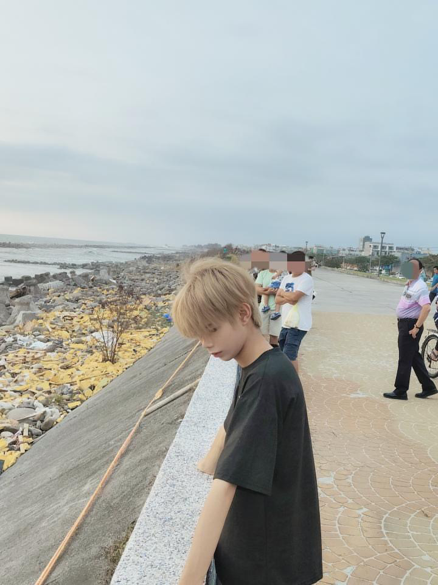

EDUCATION
苓洲國小資優班
在好奇與探索中，建立主動學習的習慣。
STUDENT · BUILDER · 2026
我是李品宏，一位正在探索資訊工程與 AI 的高中生。喜歡從一個問題出發，持續拆解、實作，直到它變得清晰。

LI PIN-HUNG 2009 / 2026
EXPLORING CS · AI · SOFTWARE
01 / ABOUT
我相信程式不只是工具，
也是一種理解世界的方式。
生日
2009.08.07現在
高雄中學・二類組方向
資訊工程 / AI02 / RECORDS
學歷
在好奇與探索中，建立主動學習的習慣。
持續累積跨領域探索與獨立研究的經驗。
投入資訊工程與 AI，下一步學習後端與資料庫，目標是資工科系。
得獎 & 成就
108 年度創意運動會，與團隊把想法化為成果。
110 年度成果，以研究方法探索自然科學問題。
把課堂之外的好奇心，帶進科學研究與發表的現場。
完成英語能力檢定，為持續學習開啟更多可能。
03 / JOURNEY
EDUCATION
在好奇與探索中，建立主動學習的習慣。
ACHIEVEMENT
108 年度創意運動會，與團隊把想法化為成果。
RESEARCH
110 年度成果，以研究方法探索自然科學問題。
RESEARCH
把課堂之外的好奇心，帶進科學研究與發表的現場。
EDUCATION
持續累積跨領域探索與獨立研究的經驗。
ACHIEVEMENT
完成英語能力檢定，為持續學習開啟更多可能。
NEXT CHAPTER
投入資訊工程與 AI，下一步學習後端與資料庫，目標是資工科系。
04 / SKILLS
從第一行程式開始，
把想做的事做出來。
NEXT UP → BACKEND & DATABASE
05 / DIRECTION
BUILDING FORWARD
我想理解一個產品從想法到運作的全貌：如何把資料整理成資訊、把邏輯寫成系統，再用 AI 讓它解決真實的問題。
持續打穩 Python、網頁前端與程式設計基礎，練習把模糊的需求拆成可以執行的步驟。
下一步學習伺服器、API 與資料庫，理解資料如何被安全地儲存、處理與提供給使用者。
探索 AI 與資訊工程的交會，從資料、模型到實際應用，培養能把技術用在生活中的能力。
LEARNING ROADMAP